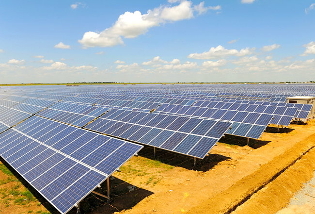
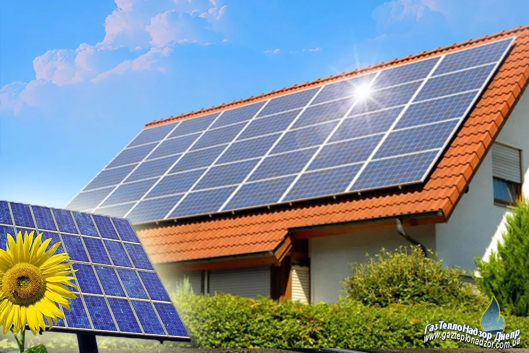
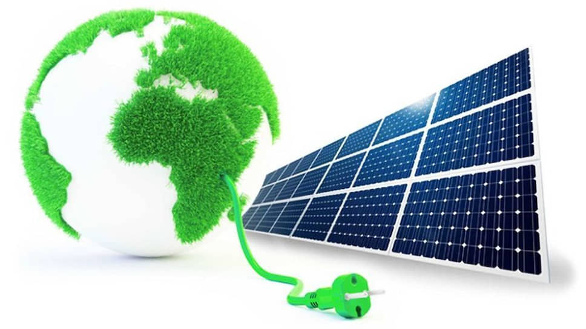
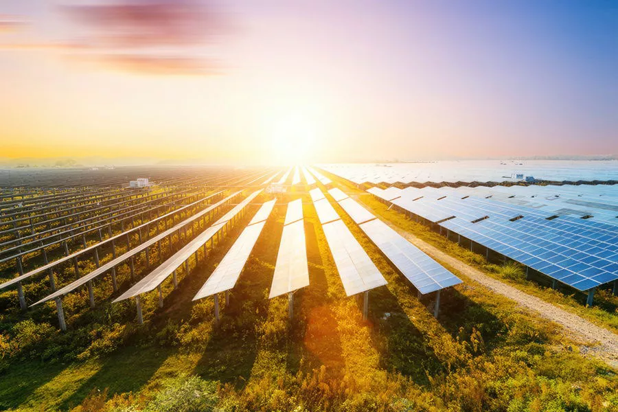

Сонячна енергетика
Сонячна електроенергія нашого часу
В останні роки відзначається інтенсивний розвиток сонячної енергетики у багатьох країнах світу, включаючи Україну. Питання отримання електрики із відновлюваних джерел енергії людство намагається вирішити ще з середини минулого століття. Але досягти добрих показників вдалося лише з підняттям ККД сонячних панелей до 18-25%. Завдяки цьому показнику будівництво сонячних електростанцій стало фінансово виправданим. Більше того, щоб прискорити розвиток галузі, уряди практично всіх держав, які реалізують програму альтернативної енергетики, запровадили спеціальний зелений тариф. Він передбачає покупку екологічно чистої електрики у юридичних та фізичних осіб. Все це сприяло приросту сонячної електроенергії приблизно на 50% упродовж останніх п'яти років. Розглянемо як розвивається ця галузь у всьому світі та які перспективи на майбутнє.
Cонячні електростанції
Альтернативні способи отримання електричної енергії сьогодні особливо популярні, тому як дозволяють підприємствам і приватним особам незалежно від централізованих електричних мереж отримувати електрику, істотно економлячи, а іноді навіть заробляючи на цьому. Найзручнішим і ефективним способом цього є установка сонячної електростанції.
Основним пристроєм, який використовується для збору сонячної енергії, є сонячні панелі, або фотоелектричні модулі. Сонячні панелі мають сонячні клітини, зазвичай зроблені з кристалічного кремнію, які здатні перетворювати сонячну радіацію на електричний струм. Коли сонячне світло падає на сонячну панель, фотоелектричні клітини генерують постійний струм, який потім може бути використаний для живлення електричних пристроїв або зарядження акумуляторів.
Хоча сонячна енергія має багато переваг, вона також має свої обмеження. Наприклад, її продуктивність залежить від наявності сонячного світла, що може бути обмеженим в хмарні дні або вночі. Також встановлення сонячних систем може вимагати початкових інвестицій і технічного ноу-хау.
Проте, завдяки технологічному прогресу та зниженню вартості сонячних систем, вона стає все більш популярною та доступною для використання в домашніх господарствах, комерційних будівлях та великих сонячних електростанціях.
Насамперед, перед використанням сонячної енергетики слід ретельно оцінювати її переваги та потенційні ризики, а також розвивати та сприяти розумному та ефективному використанню цієї технології.
Ознайомтесь з різними типами сонячних систем, такими як фотоелектричні (сонячні панелі для виробництва електроенергії) та термічні (використання сонячної енергії для нагріву води або повітря). Досліджуйте, як вони працюють та які компоненти входять у сонячну систему.
Дослідіть потенціал сонячної енергії у вашому регіоні. Існують онлайн-інструменти, які допоможуть вам визначити кількість сонячної радіації, яку ви можете отримати на своїй ділянці протягом року. Це допоможе вам зрозуміти, наскільки ефективна буде сонячна система у вашому конкретному місцезнаходженні.
Оцініть ваші поточні енергетичні потреби. Подивіться на ваші рахунки за електроенергію, щоб визначити, скільки енергії ви споживаєте в середньому за місяць. Це допоможе вам визначити розмір сонячної системи, який буде вам необхідний.
Зверніться до кваліфікованих фахівців з сонячної енергетики, які можуть надати вам консультацію та розрахунки для вашої конкретної ситуації. Вони зможуть порадити щодо оптимального розміру та типу сонячної системи, враховуючи ваші потреби та місцеві умови.
Розгляньте фінансові аспекти встановлення сонячної системи. Врахуйте вартість обладнання, встановлення, технічного обслуговування та підтримки. Дослідіть різні програми підтримки, субсидій або податкових кредитів, які можуть бути доступні у вашому регіоні.
Після отримання необхідної інформації і розрахунків, знайдіть надійного підрядника, який має досвід у встановленні сонячних систем. Перевірте їх референції та відгуки, переконайтеся, що вони ліцензовані та мають необхідні дозволи.
Разом з підрядником встановіть сонячну систему. Після встановлення впевніться, що маєте засоби для моніторингу її продуктивності. Багато сонячних систем мають системи моніторингу, які дозволяють вам переглядати вироблену енергію та контролювати її роботу.
Сонячна електроенергія є перспективним та значущим джерелом енергії, яке відкриває шлях до сталого та екологічно чистого майбутнього. Вона пропонує безкоштовне та відновлюване джерело енергії, здатне забезпечити електричну потужність для житлових, комерційних та промислових потреб. Завдяки своїм численним перевагам, вона сприяє зменшенню впливу на зміну клімату, енергетичній незалежності та економічним вигодам. Наслідки зміни клімату та обмежені ресурси традиційних джерел енергії ставлять перед нами виклики, і сонячна електроенергія є одним з ключових рішень для сталого розвитку. Продовжуючи впроваджувати та вдосконалювати сонячні технології, ми можемо перейти до чистішого та енергоефективного майбутнього, зменшити викиди шкідливих газів, підтримувати енергетичну незалежність та створювати нові можливості для енергетичного розвитку. Сонячна електроенергія відіграє важливу роль у глобальному енергетичному ландшафті і має потенціал стати одним з основних джерел енергії у майбутньому.